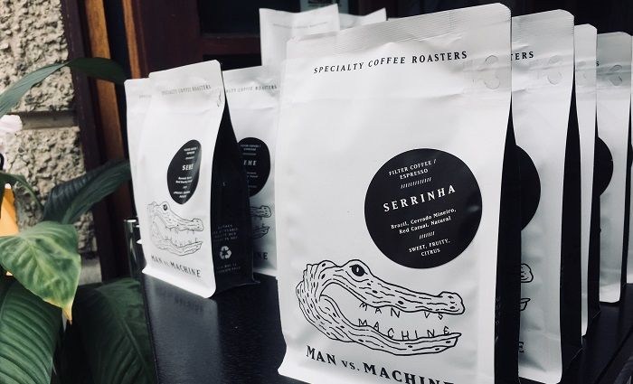

Nicht, dass das Man vs. Machine ungemütlich wäre. Im Gegenteil. Das Café wurde nicht nur wegen seines besonderen Kaffees in zahlreichen Magazinen erwähnt und ausgezeichnet, sondern auch in renommierten Lifestyle-Medien. Sogar auf vogue.com hat es einen kleinen Platz gefunden.
Ich liebe diese moderne, etwas kantige und trotzdem warme Atmosphäre. Man spürt sofort, dass nicht nur höchste Ansprüche an den Kaffee gestellt werden, sondern auch viel Liebe zum Detail im Design steckt.
Die Einrichtung ist vorwiegend schwarz-weiß gehalten, die schwarzen und weißen Tassen sind mit dem Man vs. Machine-Krokodil bedruckt, das Lichtkonzept ist unaufdringlich und durchdacht und sogar die Kaffeemaschinen passen perfekt in das Gesamtbild.
Ich habe gelernt, dass bei Man vs. Machine ausschließlich ausgewählte Arabica-Sorten geröstet und verarbeitet werden. Diese Bohne gilt allgemein als aromatischer als die kleinere Robustabohne. Und man schmeckt die Qualität einfach. Sowohl die Qualität der Kaffeebohnen selbst als auch die perfekt ausbalancierte Röstung. Man spürt einfach, dass Kaffee für Man vs. Machine viel mehr ist als eine koffeinhaltige Flüssigkeit, die man nebenbei herunter kippt, um wach zu bleiben.
Zum Kaffee gibt es eine kleine, aber feine Auswahl an Gebäck - häufig findet sich in der Vitrine eine Mischung aus veganem Bananabread (bekommt man auch frisch getoastet!), Franzbrötchen, Rote-Beete-Schoko-Brownies, Carrot Cake … Ziemlich lecker, aber im Laufe des Tages auch schnell ausverkauft. Zu bestimmten Zeiten geht es nämlich ganz schön wuselig zu - insbesondere weil der Innenbereich recht klein ist.
Eine der Man vs. Machine Locations liegt ganz in der Nähe meines alten Büros. Und immer, wenn ich in der Mittagspause etwas Ruhe oder einfach einen guten Kaffee gebraucht habe, bin ich dorthin gegangen, habe es mir in der Ecke gemütlich gemacht und ein wenig entspannt. Das hat mir immer sehr dabei geholfen, durch die teils wirklich anstrengenden Tage zu kommen. Vermutlich auch einer der Gründe, weshalb ich dieses Café so liebe.
Ein kleiner Tipp übrigens für diejenigen, die keine Milch vertragen: hier schmeckt der Cappuccino sogar mit Hafermilch super gut!
Ich habe es tatsächlich geschafft, pünktlich zur Corona-Zeit meinen Job zu kündigen. Zum Abschluss haben mir meine Kollegen ein Man vs. Machine Paket mit einer Auswahl an Kaffeebohnen nach Hause geschickt. Ich habe mich unglaublich über die Überraschung gefreut!
Da die Cafés erst einmal geschlossen waren, gab es ohnehin keine andere Möglichkeit, als den Kaffee selbst zuzubereiten. Also habe ich die Bohnen selbst gemahlen und den Kaffee mit unserer Chemex aufgebrüht. Und auch ohne die tolle Profikaffeemaschine schmeckt er wirklich lecker! :)

Es gibt insgesamt drei Man vs. Machine Filialen in München: im Glockenbachviertel, in der Maxvorstadt und die Rösterei in der Kolosseumstraße. Wenn du einmal in der Nähe bist und guten Kaffee schätzt, kann ich es nur wärmstens empfehlen!
Und wenn du weitere tolle Cafés in München oder sonst wo auf der Welt kennst, freue ich mich, wenn du mir schreibst! Ich bin immer auf der Suche nach gemütlichen Cafés und feinen Kaffeebohnen :)
Bis bald!
Deine Caro